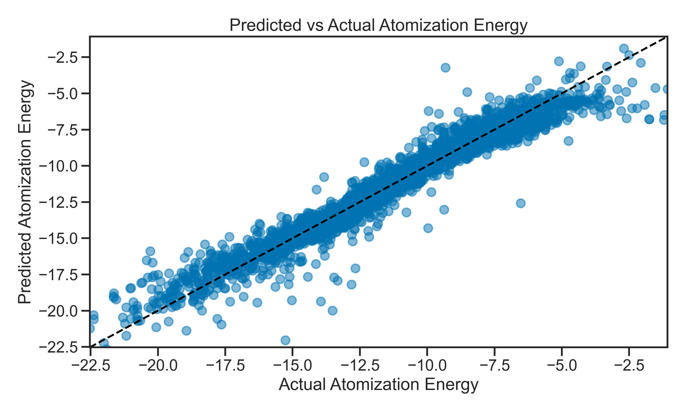

Day 04: Modeling Project#
Now that you have had some practice with the basics of machine learning, it’s time to apply your skills to a more complex problem. In this project, you will build a model to predict atomic energies using a dataset of atomic structures. Below an example of the prediction that we will be working on:

The dataset contains the ground state energy of molecules developed from simulations. This is a common computational chemistry task, and the dataset can be placed in the data folder of this repository. The goal is to predict the energy of a molecule based on its atomic structure.
The data source is from Kaggle: https://www.kaggle.com/datasets/burakhmmtgl/energy-molecule. It’s too big to include in this repository, but you can download it from Kaggle and place it in the data folder. You can look into opendatasets for a Python package that can help you download datasets from Kaggle directly into your Jupyter notebook environment (https://pypi.org/project/opendatasets/)
Each molecule has 1275 features that come from the Coulomb matrix representation of the molecule (~16,000 molecules in total). The target variable is the energy of the molecule, which is a continuous value and appears in the last column of the dataset.
Learning Goals#
Today, you will apply the skills you have learned in the previous days to build a regression model of a new dataset. After this activity, you will be able to:
Load and preprocess a dataset for regression tasks.
Select and train a regression model.
Evaluate the performance of a regression model using appropriate metrics.
Make changes to the model based on evaluation results.
Perform cross-validation to ensure the model’s robustness.
Notebook Instructions#
There is very little code in this notebook. We only read in the data and do some basic preprocessing. The rest of the notebook is for you to complete. You have many sources of information to help you complete the tasks, including:
The previous notebooks from this class.
The documentation for the libraries you are using (e.g., scikit-learn, pandas, matplotlib).
Online resources such as Stack Overflow and the scikit-learn documentation.
Additional support notebooks in the
notesandresourcesfolders of this repository.
Outline#
We start with importing the necessary libraries and loading the dataset.
# necessary imports for this notebook
%matplotlib inline
import pandas as pd
import numpy as np
import matplotlib.pyplot as plt
import seaborn as sns
sns.set_style('ticks') # setting style
sns.set_context('talk') # setting context
sns.set_palette('colorblind') # setting palette
1. Making a model of the entire data set#
✅ Tasks#
Data Preprocessing: Load the dataset and perform necessary preprocessing steps such as handling missing values, normalizing the data, and splitting it into training and testing sets.
Model Selection: Choose a suitable machine learning model for regression tasks. Start with Linear Regression and then explore more complex models like Random Forest later.
Model Training: Train the model on the training set and evaluate its performance on the entire testing set with all features.
Model Evaluation: Use appropriate metrics to evaluate the model’s performance, such as Mean Absolute Error (MAE), Mean Squared Error (MSE), and R-squared.
Plot the residuals.
Plot the predicted vs actual values to visualize the model’s performance.
What do you notice? How well does the model perform?
Are there any patterns in the residuals?
What do the predicted vs actual values look like?
Note: your regression model should be terribly bad. And we will ask why it is so bad once you get the initial results.
Reading in the data#
Below, we provide a code snippet to read in and organize the data. You can use this as a starting point for your analysis. Make sure to install the necessary libraries if you haven’t already.
df_bohr = pd.read_csv('./data/roboBohr.csv', index_col=0)
# remove pubchem_id column
df_bohr = df_bohr.drop(columns=['pubchem_id'])
# rename the Eat column to atomization_energy
df_bohr = df_bohr.rename(columns={'Eat': 'atomization_energy'})
df_bohr.head()
| 0 | 1 | 2 | 3 | 4 | 5 | 6 | 7 | 8 | 9 | ... | 1266 | 1267 | 1268 | 1269 | 1270 | 1271 | 1272 | 1273 | 1274 | atomization_energy | |
|---|---|---|---|---|---|---|---|---|---|---|---|---|---|---|---|---|---|---|---|---|---|
| 0 | 73.516695 | 17.817765 | 12.469551 | 12.458130 | 12.454607 | 12.447345 | 12.433065 | 12.426926 | 12.387474 | 12.365984 | ... | 0.0 | 0.0 | 0.0 | 0.5 | 0.0 | 0.0 | 0.0 | 0.0 | 0.0 | -19.013763 |
| 1 | 73.516695 | 20.649126 | 18.527789 | 17.891535 | 17.887995 | 17.871731 | 17.852586 | 17.729842 | 15.864270 | 15.227643 | ... | 0.0 | 0.0 | 0.0 | 0.0 | 0.0 | 0.0 | 0.0 | 0.0 | 0.0 | -10.161019 |
| 2 | 73.516695 | 17.830377 | 12.512263 | 12.404775 | 12.394493 | 12.391564 | 12.324461 | 12.238106 | 10.423249 | 8.698826 | ... | 0.0 | 0.0 | 0.0 | 0.0 | 0.0 | 0.0 | 0.0 | 0.0 | 0.0 | -9.376619 |
| 3 | 73.516695 | 17.875810 | 17.871259 | 17.862402 | 17.850920 | 17.850440 | 12.558105 | 12.557645 | 12.517583 | 12.444141 | ... | 0.0 | 0.0 | 0.0 | 0.0 | 0.0 | 0.0 | 0.0 | 0.0 | 0.0 | -13.776438 |
| 4 | 73.516695 | 17.883818 | 17.868256 | 17.864221 | 17.818540 | 12.508657 | 12.490519 | 12.450098 | 10.597068 | 10.595914 | ... | 0.0 | 0.0 | 0.0 | 0.0 | 0.0 | 0.0 | 0.0 | 0.0 | 0.0 | -8.537140 |
5 rows × 1276 columns
## your code here
2. Improving the model with feature removal/selection#
You likely noticed that the model is not performing well. This is expected, as the dataset is complex and has some real bad features. In this section, you will improve the model by removing some of the features that seem to be problematic. As a hint, look into the features with many zeros in the dataset.
✅ Tasks#
Identify and remove features that are not useful for the model. A suggestion is to plot the number of zeroes in each feature as a histogram and remove the features with a high number of zeroes.
Re-train the model with the reduced feature set and evaluate its performance again.
In doing this, use exploratory data analysis (EDA) techniques (e.g., plotting) to understand the data better.
Going further (optional): Dropping zero-heavy features is just one strategy. Once you have a baseline improvement, you may want to compare it against a more systematic approach. Pick one and go deep:
Recursive Feature Elimination (RFE) — let the model rank and prune features for you. See
../notes/reverse-feature-elimination.ipynb.Principal Component Analysis (PCA) — compress 1275 correlated features into ~50 components. See
../notes/05_pca.ipynb.A different model — e.g.
Ridge(regularized linear) orRandomForestRegressor.Don’t try everything — choose one, and explain why it helped (or didn’t).
### your code here
3. Evaluating the model with cross-validation#
Once you have a working model, try to use Cross Validation to evaluate the model’s performance. This will help you understand how well your model generalizes to unseen data. Cross Validation is a technique that splits the dataset into multiple subsets, trains the model on some of them, and tests it on the remaining ones. This process is repeated several times to ensure that the model’s performance is consistent across different subsets of the data.
✅ Tasks#
Read the following documentation on using Cross Validation with Scikit-learn: https://scikit-learn.org/stable/modules/cross_validation.html.
Implement Cross Validation in your model training process. Use
cross_val_scoreorcross_validatefrom scikit-learn to evaluate the model’s performance.Try different sampling strategies, such as K-Fold or Stratified K-Fold, to see how they affect the model’s performance.
Try to answer the following questions:
How consistent is the model’s performance across different folds?
Does it improve the model’s robustness?
### your code here